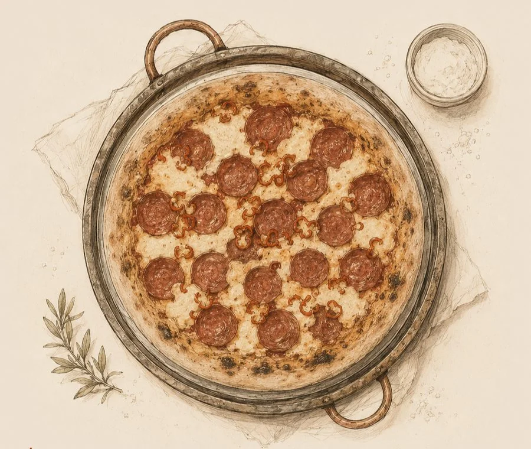

Massa de Pizza El Guapo

Base (100% = 500g farinha)
-
Farinha W300+ ou Tipo 1 Forte100% 500g
-
Água65% 325g
-
Fermento biológico fresco1% · seco: 1,7g 5g
-
Mel ou açúcar2% 10g
-
Sal refinado2,4% 12g
-
Azeite de oliva4% 20g
Poolish — 18 a 24h antes. Em uma tigela, combine 200g de farinha, 200g de água em temperatura ambiente e 2g de fermento biológico fresco (equivalente a uma ervilha). Misture até homogeneizar. Cubra com filme plástico e deixe fermentar em temperatura ambiente por 18 a 24h. O poolish está no ponto quando tiver dobrado de volume, apresentar bolhas vivas na superfície e o centro começar a afundar levemente ao inclinar a tigela — sinal de que a atividade fermentativa está no pico. Não use além desse momento.
Refresco — Mistura inicial. Na tigela da batedeira com gancho, combine os 300g de farinha restante com o mel. Adicione o poolish maturado e os 125g de água gelada. Misture em velocidade baixa por 2 a 3 minutos. A água gelada controla a temperatura final da massa durante o batimento, evitando que o glúten superaqueça e que o fermento se ative prematuramente.
Sal e fermento de reforço. Adicione o sal e, em seguida, os 3g restantes de fermento fresco. Aumente para velocidade média e sove por 8 a 10 minutos, até a massa estar completamente lisa, elástica e se descolando das paredes. Teste do véu deve ser positivo. O fermento adicional garante o "oven spring" — o salto explosivo que infla a borda no forno.
Incorporação do azeite. Com a batedeira em velocidade baixa, adicione o azeite em fio fino. Bata por mais 2 a 3 minutos até a massa estar completamente lisa e levemente brilhante. O azeite age como amaciante do miolo — ele interrompe parcialmente a rede de glúten, tornando a massa mais extensível e o interior da pizza mais tenro.
Descanso e boleamento. Cubra a massa e deixe descansar por 20 a 30 minutos. Divida em 2 porções de aproximadamente 435g. Boleie cada uma criando tensão superficial; feche a emenda para baixo com firmeza. A bola deve estar firme e com superfície totalmente lisa — essa tensão sustentará a estrutura ao longo de toda a maturação.
Maturação longa. Disponha as bolas em recipientes individuais levemente untados com azeite. Leve à geladeira por 24 a 48h. Além da fermentação lenta, as enzimas da farinha trabalham continuamente: amilases degradam amido em açúcares simples; proteases fragmentam proteínas — gerando sabor, aroma e extensibilidade que nenhuma fermentação rápida consegue alcançar.
Temperamento. Retire as bolas da geladeira com 2 a 3h de antecedência. Deixe em temperatura ambiente, cobertas, para que a massa relaxe e o glúten perca a tensão acumulada pelo frio. Tentar abrir uma massa gelada resulta em retração constante e risco de rasgo.
Abertura à mão. Polvilhe a bancada com sêmola fina ou farinha. Com as mãos, pressione o centro da bola de dentro para fora, preservando a faixa de borda que formará o cornicione. Nunca use rolo: ele expulsa o CO₂ acumulado nos alvéolos e achata toda a estrutura construída durante a maturação.
Assamento. Asse em forno a 250–300°C, preferencialmente sobre pedra refratária ou aço pré-aquecido por ao menos 45 minutos. A alta temperatura produz a leopardização (manchas escuras características) na borda e o oven spring explosivo. Tempo: 6 a 12 minutos conforme equipamento.
| % | Perfil & Resultado Esperado |
|---|---|
| 55–60% | Massa firme, fácil de manusear. Crosta densa e crocante. Ideal para fornos de temperatura moderada. |
| 62–65% | Esta receita. Equilíbrio entre extensibilidade e estrutura. Borda macia tipo "pãozinho". Funciona bem a 250°C+. |
| 68–72% | Alvéolos grandes e irregulares, miolo úmido. Exige mais técnica. Ideal para 350°C+ ou forno a lenha. |
| 75%+ | Napolitana contemporânea ou teglia. Casca fina, leopardização intensa. Alta complexidade técnica. |